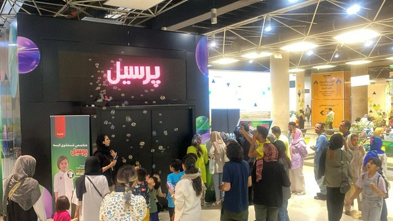
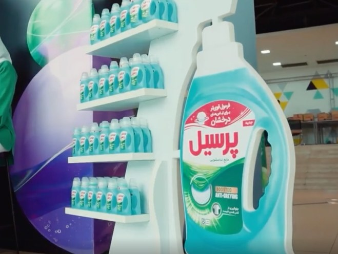
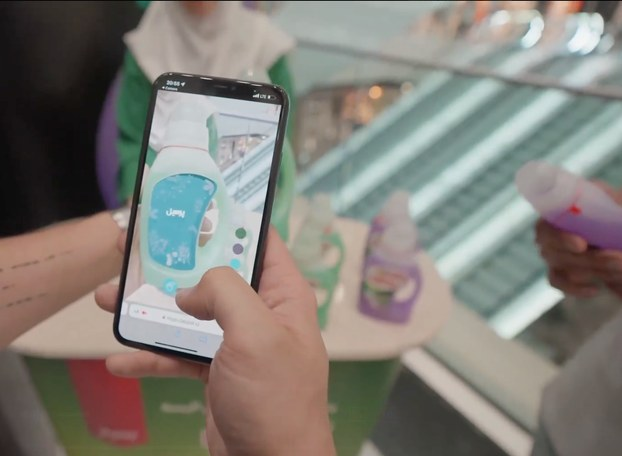

Persil aimed to reintroduce its new detergent line, Persil Smokey, in an oversaturated laundry market where traditional product sampling no longer captured attention. The objective was to move beyond standard distribution and create a memorable, experience-led activation that reinforced product performance and brand differentiation.
My Role
Campaign and activation strategy support within a cross-functional agency team, working across brand, creative, experiential (BTL), production, and influencer teams.
Key contributions:
Supporting activation planning and execution aligned with brand objectives
Cross-team coordination and messaging alignment across touchpoints
Supporting influencer and digital touchpoints connected to the activation
Performance tracking and post-campaign reporting to inform optimization
Objective
Drive product trial through innovative, interactive sampling
Differentiate Persil in an oversaturated laundry category
Build engagement and collect targeted consumer data
Execution Highlights
Supported rollout of a gamified, immersive sampling experience built around an interactive installation
Helped align location strategy with key audience segments (families and young couples)
Coordinated interactive elements including motion-based experiences and QR-enabled AR content
Supported a structured BTL journey from experience to sampling to feedback
Performance & Impact
37,000+
Participants engaged with the experience

40,000+
Samples distributed through targeted activation

Qualified consumer data
collected via surveys

Key Learnings
Experience-led sampling drives higher engagement than traditional distribution
Gamification strengthens recall and emotional connection